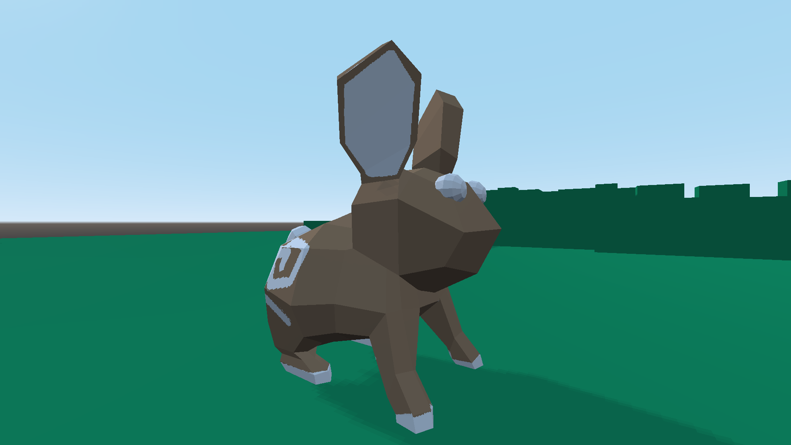
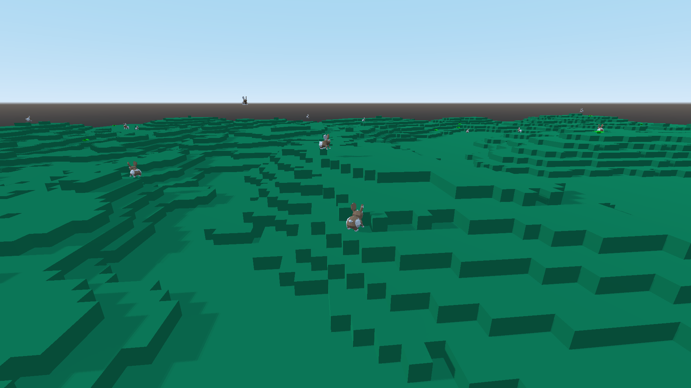
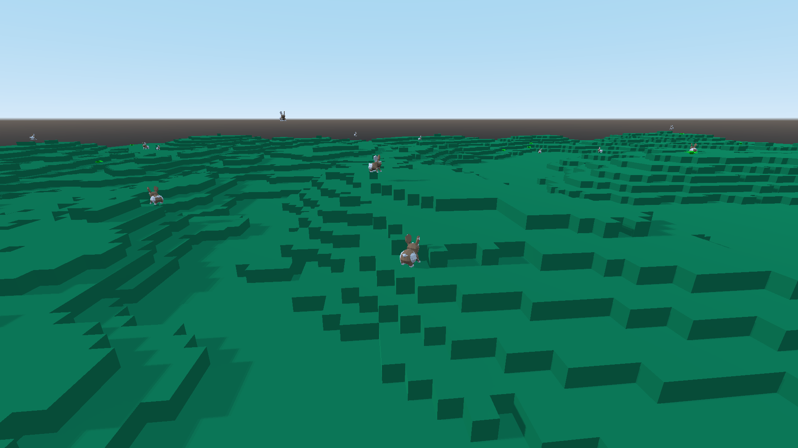
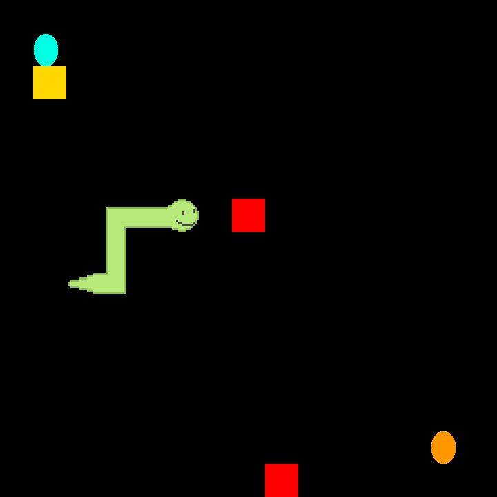
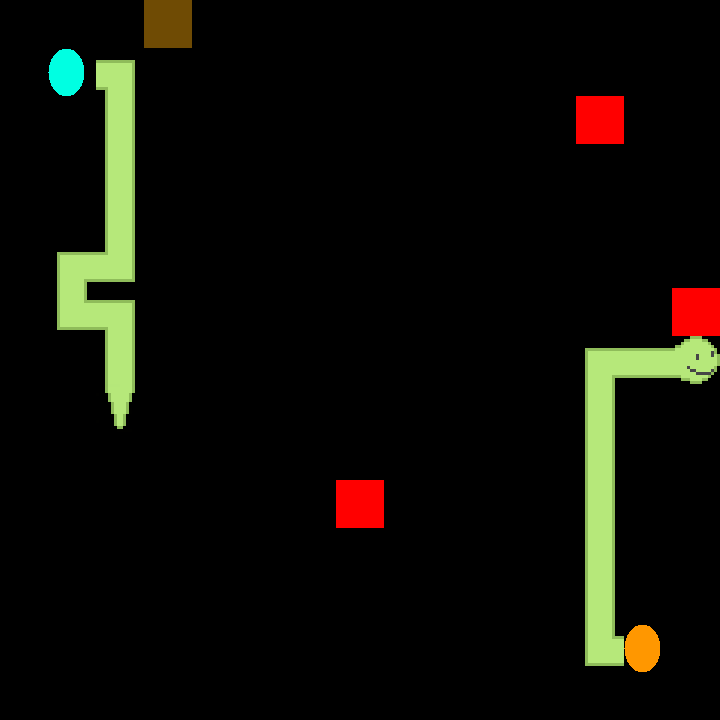

Written using the Godot Engine, rabbits hop on a procedurally generated chunk of land at the cost of energy, competeting for food which replenishes it. Rabbits have different genes, each gene determines traits such as how long the rabbit can live, how high it can jump, the pattern and colour of its fur coat and how greedy it is for food. Once a rabbit is well fed it will search for a mate and create more offspring, passing on its genetic traits, with a random chance of mutating. Users can determine the traits of the initial population and at the end of the simulation, view all of the rabbits traits, and observe how the rabbits have gradualy adapted to their surroundings.
I believe that much more work needs to be done to make the progarm more robust
natural selection simulator
 

snakey is a snake game. i wanted to make a game without a purpose build engine, so i made snakey in java and jframe. it has extra features such as a variety of food which can go rotten and negate the snake's length. aswell as portals allowing the snake to teleport
snakey
 
auctioner is a little auction api where users can register, log in, auction items and then bid on them before they expire
i want to create a frontend for auctioner. possibly in reactjs